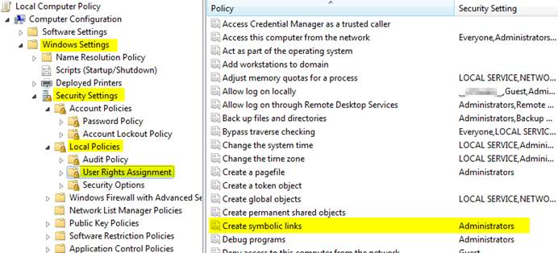

Using pygcam under Windows¶
The pygcam package was developed on Unix-like systems (Mac OS, Linux) and
subsequently ported to Microsoft Windows. This page provides Windows-specific
information.
Enable symbolic links¶
In Unix-like systems, “symbolic links” (symlinks) are frequently used to provide shortcuts
or aliases to files and directories. The pygcam scripts use symlinks to create GCAM workspaces
without having to lots of large, read-only files. Rather, it creates workspaces with writable
directories where GCAM will create files at run-time, and it uses symlinks to the read-only
files (e.g., the GCAM executable) and folders (e.g., the input directory holding GCAM’s
XML input files.
Windows (Vista and onward) also have symlinks, but only administrators can create symlinks
unless specific permission has been granted to a user. To grant this permission, run the
Windows program gpedit.msc and select the option shown in the figure below. Edit the option
and add the desired user name to the list.
Note, however, that the user cannot also be in the Administrator group or the permission is “filtered” out. (This seems to be a flaw in the design of the permission system since one would expect rights to be the union of those for the groups one’s account is in.)

- Also, note the following:
To remove a symlink to a file, use the
delcommandTo remove a symlink to a folder, use
rmdir(orrdfor short).Using “del” on a symlink to a folder will offer to delete not just symlink, but also the files in the folder pointed to by the symlink. (An unfortunate violation of the principle of least astonishment.)
Either type of symlink can be removed using the file Explorer as well.
Symlinks work across devices and network, and through other symlinks, however, if you are working across multiple drives, be sure that you specify the drive letter (e.g.,
C:) in the link target or the path will be interpreted relative to the current drive.Symlinks can be created only on the NT File System (NTFS), not on FAT or FAT32, or network-mounted drives in other formats (e.g., Mac OS). This can be an issue if, for example, you want to keep your GCAM workspaces on an external drive. Pygcam will fail when trying to create symbolic links in those workspaces.
Using Cygwin¶
Windows’ native command-line tools are fairly primitive. For folks new to running commmand-line programs, I recommend installing the (free, open-source) Cygwin package, which is a set of libraries and programs that provides a Linux-like experience under Windows.
Using bash will start you up the learning curve to use the GCAM Monte Carlo framework,
which currently runs only on Linux systems.
The bash shell (or your favorite alternative) offers numerous nice features. Exploring
those is left as an exercise for the reader.
Cygwin provides an installer GUI that lets you select which packages to install. There is a huge set of packages, and you almost certainly won’t want all of it.
Download the appropriate setup.exe version (probably 64-bit). Run it and, for most people, you’ll just accept all the defaults. You might choose a nearby server for faster downloads.
I recommend installing just these for now (easy to add more later):
under Editors
- nano (a very simple text editor useful for modifying config files and such)
Editors popular with programmers include
emacsandvim, though these have a steeper learning curve thannano.Under shells:
- bash (The GNU Bourne Again Shell – this is the terminal program)
- bash-completion (saves a lot of typing)
Note
Don’t install python since we’re using Anaconda. Installing another version of Python just confuses things.
Optionally, if you plan to work with the code in the git repository, download git:
- under Devel
- git (select “git: Distributed version control system” and all the required libraries will be installed, too.)
Alternatively, you might try the free SourceTree application
from Atlassian, which provides a nice user interface for git on Mac OS X and Windows.